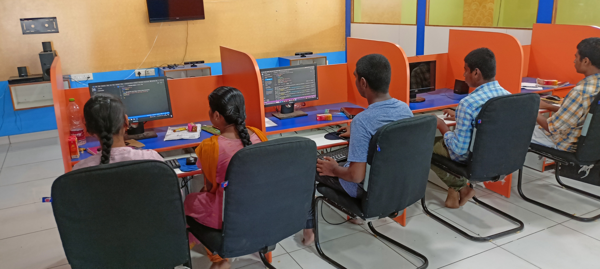

### Early Exposure to Computers In the early stages of life, many individuals are exposed to computers through various means such as home use, school programs, or community centers. These initial interactions often involve basic activities like playing educational games, browsing the internet, or using word processors. Such early exposure can spark a curiosity and fascination with technology, laying the groundwork for a deeper interest in computing. Understanding how to navigate and use computers becomes a fundamental skill that can shape one's academic and personal pursuits. ### The Role of Computers in Education As students progress through their education, computers become increasingly integral to their learning experiences. From elementary school through high school, computers are used to conduct research, complete assignments, and facilitate learning through interactive programs. This integration of technology into education not only enhances learning outcomes but also helps students become more proficient with digital tools, a necessity in the modern world. The use of educational software and online resources introduces students to the vast potential of computers beyond just simple usage. ### Developing Problem-Solving Skills Engaging with computers from a young age helps in developing critical problem-solving skills. Whether it's figuring out how to troubleshoot a software issue or learning to code, the process of identifying problems and devising solutions is central to computing. These skills are transferable to many other areas of study and life, fostering a logical and analytical mindset. Early experiences with programming languages like Scratch or Python can be particularly beneficial, offering a hands-on approach to understanding complex concepts through simple, yet powerful, exercises. ### Extracurricular Opportunities Many schools offer extracurricular activities such as coding clubs, robotics teams, or computer science classes that further nurture an interest in computers. These opportunities allow students to explore technology in a collaborative environment, often working on projects that have real-world applications. Participation in these activities can be instrumental in deciding to pursue a degree in computer science or related fields, as they provide practical experience and exposure to advanced concepts that go beyond the standard curriculum. ### Influence of Role Models Role models, such as teachers, family members, or industry professionals, play a significant role in inspiring a passion for computers. A dedicated computer science teacher or a tech-savvy parent can provide guidance, encouragement, and resources that help foster a deeper interest in the field. These mentors often share their experiences and insights, making the subject matter more accessible and relatable. Their influence can be pivotal in shaping career aspirations and academic choices. ### Online Resources and Communities The internet is a treasure trove of resources for those interested in computers. Websites like Khan Academy, Codecademy, and Coursera offer free or affordable courses on various aspects of computer science. Online forums and communities such as Stack Overflow or GitHub provide platforms for budding programmers to seek help, share projects, and collaborate with others. These resources make it possible for anyone with an internet connection to learn and grow their skills at their own pace, further fueling the desire to pursue a formal education in the field. ### Exposure to Real-World Applications Seeing the real-world applications of computers can be incredibly motivating for prospective students. From video games and mobile apps to artificial intelligence and cybersecurity, the diverse and impactful uses of computer technology are vast. Understanding how computers are used to solve real problems and improve lives can solidify the decision to study computer science. Visiting tech companies, attending technology fairs, or participating in hackathons can provide firsthand experience of the industry's dynamic nature. ### Academic Preparation High school courses in mathematics, physics, and introductory computer science are crucial for preparing students for a B.Tech in Computer Science. Strong analytical and mathematical skills are essential for understanding complex algorithms and systems. Advanced Placement (AP) courses or International Baccalaureate (IB) programs often offer specialized computer science classes that can provide a significant advantage. These courses not only cover fundamental concepts but also introduce students to programming and computational thinking, essential skills for any computer science degree. ### Personal Projects and Experimentation Many future computer science students spend considerable time working on personal projects or experimenting with technology. Building websites, developing apps, or setting up home networks are common activities that deepen understanding and practical skills. These projects often stem from personal interests or problems that the individual wants to solve, making the learning process more engaging and meaningful. Such experiences demonstrate a proactive approach to learning and a genuine passion for the subject. ### Decision to Pursue B.Tech in Computer Science The culmination of these experiences often leads to the decision to pursue a B.Tech in Computer Science. The combination of early exposure, educational experiences, extracurricular activities, mentorship, online resources, and personal projects creates a solid foundation and a clear pathway to a career in technology. By the time students apply for a B.Tech program, they usually have a strong understanding of what to expect and a clear motivation for their choice, driven by a passion for computing and a desire to innovate and solve complex problems.
